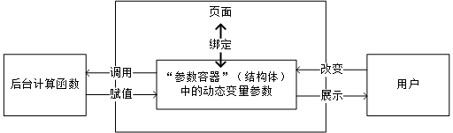

App设计教程
在Quick Start之后，相信大家已经看到了Web页面，本篇依旧以TestLab为例，进行设计方法说明。
Stipple.jl用的是MVC框架，但是我们不涉及各种框架知识，有兴趣的同学自行查看。我们从实践的角度贯通实现APP的思想。
设计逻辑
整个程序的运行逻辑图如图：

在这个逻辑的基础上解决2个问题：
- 在交互页面选择参数，参数需要被程序监听（也就是说如果参数改变了，程序需要及时检测到）
- 被监听的参数传递到计算函数，函数计算出结果后页面展示结果。
所以，细分可以得到如下的逻辑图：

那么整体的程序设计思路就是紧紧围绕这个逻辑图来进行的。
代码剖析
参数“容器”
所有的可变参数都放置在——mutable struct（可变参数结构体）中。这个结构体叫MyPage（名字任意取）。
可变参数本质就是被监听的变量。结构体中的成员实际上是变量，本篇中叫参数或叫变量都指的是同一个意思。
@reactive mutable struct MyPage <: ReactiveModel
# iris_data::R{DataTable} = DataTable(data)
value::R{Int} = 0
click::R{Int} = 0
features::R{Vector{Symbol}} = [:_sin, :cos, :log, :tanh]
f_left::R{Symbol} = :sin
f_right::R{Symbol} = :sin
plot_data::R{Vector{PlotData}} = []
layout::R{PlotLayout} = PlotLayout(plot_bgcolor="#fff")
x_limit::R{Int} = 3
paramenter::R{Float32} = 1.2
end其中，用户决定的参数有：
x_limit对应X轴范围paramenter对应函数系数f_left对应测试函数1f_right对应测试函数2value、click对应SIMULATION按钮
储存计算的结果有：
plot_data对应动图
生成页面函数——UI
function ui(model::MyApp.MyPage)
onany(model.value) do (_...)
model.click[] += 1
compute_data(model)
end
page(model, class="container", title="Ai4Lab",
head_content=Genie.Assets.favicon_support(),
prepend=style(
"""
tr:nth-child(even) {
background: #F8F8F8 !important;
}
.modebar {
display: none!important;
}
.st-module {
marign: 10px;
background-color: #FFF;
border-radius: 5px;
box-shadow: 0px 4px 10px rgba(0, 0, 0, 0.04);
}
.stipple-core .st-module > h5,
.stipple-core .st-module > h6 {
border-bottom: 0px !important;
}
"""
),
[
heading("测试")
row([
cell(
class="st-module",
[
h6("X轴范围")
slider(1:1:20,
@data(:x_limit);
label=true)
]
)
cell(
class="st-module",
[
h6("函数系数")
slider(1:0.1:2,
@data(:paramenter);
label=true)
]
)
cell(
class="st-module",
[
h6("测试函数1")
Stipple.select(:f_left; options=:features)
]
)
cell(
class="st-module",
[
h6("测试函数2")
Stipple.select(:f_right; options=:features)
]
)])
row([
cell(
class="st-module",
p([
"Simulation Times: "
span(model.click, @text(:click))
])
)
btn("Simulation!", color="primary", textcolor="black", @click("value += 1"), [
tooltip(contentclass="bg-indigo", contentstyle="font-size: 16px",
style="offset: 10px 10px", "点击按钮开始仿真!")])
cell(
class="st-module",
p([
"Simulation Times: "
span(model.click, @text(:click))
])
)])
row([
cell(
class="st-module",
[
h5("仿真结果：")
plot(:plot_data, layout=:layout, config="{ displayLogo:false }")
]
)
])
]
)
end
ui函数中有两个重要的部分：
- 触发——
onany - html页面——
page
触发
对于触发而言，onany(model.value)表示监听参数容器中value的值，如果这个值改变了，就进行系列计算。
思考：如果同时监听x_limit、paramenter、f_left、f_right、value会有什么结果。
page页面划分
对于页面而言，描述了整个html页面的结构。以及对应的参数绑定。 page中有row和cell，他们的关系如下：

整个页面分为3个row，每个row里面可以分出cell。
可以向row与cell传递一些特性参数，例如size等，这些需要查阅官方文档的API。或者从代码示例中查看一些可能的用法，因为开发者本身的文档也不是很完善。
page中值绑定
cell中，类似：
# 滑动条
slider(1:0.1:2,@data(:paramenter);label=true)
# 选择框
Stipple.select(:f_right; options=:features)它们将页面与参数容器中的变量绑定在一起了。这种绑定中自动包含监听。也就是说用户只要拖动滑动条，那么它绑定的相应值就被记录下来了。
记录不等于触发，只有onany()中的变量改变了才会触发。 换一句话说，页面中绑定的值随时都在被监听，只要改变了都被记录下来。但是触发与否，哪些值触发，由onany()决定。 即，监听是自动完成的，触发是人为决定的。
计算函数
pd(f, para, xlim, name) = PlotData(
x=Float64[i for i in 1:0.1:xlim],
y=Float64[para * f(i) for i in 1:0.1:xlim],
plot=StipplePlotly.Charts.PLOT_TYPE_SCATTER,
name=name,
)
function compute_data(ic_model::MyApp.MyPage)
f_left = isequal(ic_model.f_left[], nothing) ? sin : eval(ic_model.f_left[])
f_right = isequal(ic_model.f_right[], nothing) ? sin : eval(ic_model.f_right[])
xlim = ic_model.x_limit[]
para = ic_model.paramenter[]
for i in 0:30
ic_model.plot_data[] = [pd(f_left, para, xlim + i, "测试函数1"), pd(f_right, para, xlim + i, "测试函数2")]
sleep(1 / 30)
end
nothing
end计算函数就干了一个活，触发以后，根据传回来的“用户决定的值”计算出相应的结果，并回传。那么就有两个问题：
- 什么叫“根据传回来的参数”？
- “回传”是怎么个“回传”法？
结构体中可变参数调用
第一个问题的本质是——调用！因为前面已经说了。任何改变都会被监听并自动记录。被触发需要计算的时候，调用这些被记录的值不就可以了吗？事实上的确如此：
xlim = ic_model.x_limit[]
para = ic_model.paramenter[]例如，这两个做法就是直接调用参数容器里的参数值
参数容器里的参数值调用时需要带上[]，例如：ic_model.x_limit[]否则报错！
随后，调用了函数pd()。函数pd返回的是一个结构体，这个结构体叫PlotData。PlotData是非常重要的一个结构体。因为这是Web程序，画图不会直接画，而是需要把画图的数据存下来，生成相关的css和js文件，再在浏览器中显示。所以需要PlotData这样一个中间体来存储画图的数据。
对于Web程序来说，最终目的是展示结果。也可以说，生成这个PlotData是触发函数计算最终的目的。当然，也有存在其他的展示形式，如表格等等。本质上是一样的。
参数回传
第二个问题的本质是——赋值！把计算出来的PlotData结果赋值给参数容器中的plot_data，实现传递。随后它就在与之绑定的页面区域中显示出来。也就是说，页面的监听是双向的。用户通过滑动条改变参数“容器”参数是可以的，后台计算程序改变参数“容器”参数也是可以的。无论哪一方改变了，都没有问题，页面都会做出相应的改变。
例如：
for i in 0:30
ic_model.plot_data[] = [pd(f_left, para, xlim + i, "测试函数1"), pd(f_right, para, xlim + i, "测试函数2")]
sleep(1 / 30)
end这里通过for循环，连续得到30个PlotData并赋值给plot_data[]，只要赋值了，页面就会显示。此外，中间休息$\frac{1}{30}$秒。这不就是动画的原理吗？
参数容器里的参数值被赋值时需要带上[]，例如：ic_model.plot_data[]否则报错！
总结
与逻辑图不同的是，程序的框架如下：

如果仔细思考可以发现，最关的键其实是我们的可变结构体：
@reactive mutable struct MyPage <: ReactiveModel这个结构体是整个App交互的一个桥梁。交互时发生的变化，全部体现在这里面的参数（变量）的变化上。当需要设计一个App时，考虑交互的动态参数，其实就是在设计这个结构体的成员。
只要产生交互，就要设计变量放入“参数容器”中。
例如，本例中的两个滑杆，两个选择框，一个按钮。以及画图区域。这些是交互的组件，那么就要设计相应的变量来“承载交互”。
建议
本篇贯穿了App设计的理念。但对于一些细节不可能面面俱到。不太明白的话，对着代码看效果，努力思考为什么这么写能行。还有一些细节上的疑问，可以通过改动代码看页面的变化来琢磨它的机制。从实践中体会，这是理解最快的方式。同时积极参照官方文档及API。
从教程调试建议中看一看，学习方法。
可以多多思考，为什么这么写能行；如果要实现XXX，应该要怎么做；那么做能不能实现等等。
发挥想象力，带着问题去探索实践，慢慢地，就悟了!💪💪💪